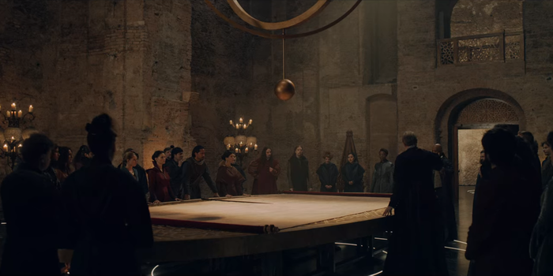

Story
Episode 1: The End's Beginning
Following Geralt of Rivia's battle with a kikimora in 1231, he enters the town of Blaviken and meets Renfri, a cursed princess-turned-bandit hunted by the wizard Stregobor, who thinks her evil for her birth during an eclipse. Stregobor lures Geralt to his hideout seeking to hire him to kill Renfri, but Geralt refuses. Renfri later offers Geralt a counter-proposal, but he refuses with an ultimatum: leave or die. She feigns agreement, but upon waking up the next morning, Geralt realizes Renfri will not stop until Stregobor is dead, and he rushes to stop her. After killing her men, he fights and fatally wounds Renfri, and her dying words told him of a girl in the forest who is his destiny forever. Stregobor arrives to take Renfri's body for autopsy. When Geralt opposes, the townsfolk force him to leave, urged on by Stregobor. In 1263, The kingdom of Cintra is conquered by southern neighbor Nilfgaard, and Princess Cirilla, also known as Ciri, is sent away by her grandmother, Queen Calanthe, to escape and find Geralt. Cirilla is captured by Nilfgaardian officer Cahir, but the sight of the burning city and castle trigger her powers, allowing her to escape.
Episode 2: Four Marks
In 1206, hunchback Yennefer from Vengerberg of Aedirn is sold to Tissaia de Vries by her father. She is taken to Aretuza for training in magic, but finds difficulty in the practice. She makes a friendship with Istredd, even revealing her quarter-elf heritage, a cause of her deformity. Unbeknownst to either, Tissaia and Stregobor were using Yennefer and Istredd respectively to spy on each other. Later, Yennefer witnesses Tissaia turning three students into eels to act as conduits powering Aretuza with magic. In 1240, Geralt is hired to investigate grain thefts in Posada and is followed by Jaskier the bard. They encounter a Sylvan named Torque, who knocks them unconscious and takes them to his mountain cave. There, Geralt meets Filavandrel, the elven king and urges he lead his people to better lands after being banished by the humans. Instead of killing them, Filavandrel frees Geralt and Jaskier, taking the former's words to heart. In 1263, Cirilla encounters Dara, a boy in the woods, who guides her to a refugee camp. Dara returns to save her as the camp is attacked by Cahir's forces, and she later realizes Dara is an elf.

Episode 3: Betrayer Moon
In 1210, Yennefer and Istredd become lovers while finishing their training. While Yennefer has the chance to transform her body into her ideal image during graduation, the Brotherhood of Sorcerers discuss the allocation of their newly initiated to their respective kingdoms. But through Stregobor's scheme, Yennefer is assigned to Nilfgaard instead of her preferred Aedirn due to her elven blood. Realizing what happened, Yennefer angrily breaks up with Istredd, knowing only he could have told Stregobor about her blood. Having missed graduation, Yennefer undergoes the painful transformation to be beautiful at the cost of her fertility. Wearing her new body, Yennefer charms Aedirn's King Virfuril into taking her as advisor, sending Fringilla to Nilfgaard instead. In 1243, Geralt enters the kingdom of Temeria to investigate a monster, assisted by Triss Merigold, King Foltest's sorceress advisor. He identifies the monster as a Shtriga, a creature born from a curse he later discovers was placed by the courtier Ostrit who learned about the affair between Foltest and his sister, Princess Adda. Using Ostrit as bait, Geralt battles to contain the shtriga until dawn, which lifts the curse. In 1263, Cirilla enters a dense forest in a trance as Dara follows to help.
Episode 4: Of Banquets, Bastards and Burials
In 1240, having served Aedirn for thirty years, Yennefer escorts Queen Kalis of Lyria when they are ambushed by an assassin. The assassin follows them through multiple portals, killing Kalis. Although Yennefer escapes with Kalis's newborn daughter, the baby dies from a thrown dagger. In 1249, Geralt accompanies Jaskier to the betrothal feast of Princess Pavetta, Queen Calanthe's daughter. Urcheon of Erlenwald (also named Duny) interrupts to demand Pavetta's hand through the Law of Surprise, having saved her father years earlier. Urcheon suffers from a curse that transformed him into a hedgehog/man creature. Despite Pavetta's acceptance, Calanthe refuses and a brawl ensues. When Calanthe tries killing Urcheon, Pavetta activates her power, unleashing a maelstrom until Geralt and Mousesack intervene. Wanting her daughter happy, Calanthe marries Duny and Pavetta, which lifts Duny's curse. Duny, thankful for Geralt's aid, insists he take a reward, so Geralt jokingly invokes the Law of Surprise for something Duny has but doesn't yet know. The crowd then immediately learns Pavetta is pregnant with Duny's child. In 1263, Nilfgaard's forces resume their pursuit of Cirilla with Mousesack as their prisoner. Meanwhile, Cirilla and Dara encounter Queen Eithne and her Dryads in Brokilon Forest, while Cahir and Fringilla track Ciri's location.
Episode 5: Bottled Appetites
In 1256, seven years after Pavetta's betrothal, Geralt and Jaskier discover a Djinn and accidentally release it. Initially, it seems that Jaskier is the Djinn's 'master' but then he falls seriously ill. Geralt seeks help from the nearest healer, the elf Chireadan, but as they need a mage to heal Jaskier, Chireadan reluctantly refers them to Yennefer. Although Yennefer cures Jaskier, her plan is to use him to capture the Djinn to grant her wish of regaining her fertility. As Jaskier uses his last wish, nothing happens and it's revealed that it is Geralt, not Jaskier, who actually has the wishes. Geralt realises the Djinn will kill Yennefer, so he uses his third and final wish to save her (but the wish itself is not revealed). The Djinn leaves. Now free and safe, Geralt and Yennefer act on their attraction and have sex. Yennefer asks what his third wish was, but Geralt does not answer as he has finally fallen asleep. In 1263, Cahir hires a doppler to assume the identity of Mousesack by copying his form and memories, then kills him. Later, Eithne allows Ciri to stay in Brokilon, but "Mousesack" arrives requesting Ciri and Dara leave with him.
Episode 6: Rare Species
In 1262, Geralt, Jaskier, and Yennefer are invited to join a dragon hunt by adventurer Borch and his two bodyguards Téa and Véa. Yennefer's knight joins the party along with a band of dwarves and Reavers, professional monster hunters. After camping overnight, the party finds the knight dead and the Reavers have departed. The dwarves take their party to a mountain shortcut, but the bridge gives way. Borch's group sacrifices themselves rather than endanger the party. Geralt and Yennefer reconcile before reaching the dragon's den, but find it dead with Téa and Véa alive guarding the dragon's egg. Borch reveals himself as Vilentretenmerth, a golden dragon. The five of them defend the egg from the Reavers. Borch later pays off the dwarves with dragon teeth, and Geralt reveals to Yennefer his third wish bound their fates together. Believing her feelings for Geralt to be artificial, Yennefer declares that she can't be with him and leaves. Hurt, Geralt snaps at Jaskier, blaming him for all of his misfortunes and hopes that they never meet again. Dara grows suspicious over "Mousesack", so Ciri questions him and the doppler reveals himself. In the scuffle, Dara is knocked out as Ciri escapes, but is captured by Cahir. "Ciri" reveals itself as the Doppler and fights Cahir before escaping. Dara frees the real Ciri, but leaves her. Cahir and Fringilla plan their next move.
Episode 7: Before a Fall
In 1263, with Nilfgaard poised to invade Cintra, Geralt decides to invoke his Law of Surprise and claim Ciri to protect her. Seeing through the impostor offered up by Calanthe, he is imprisoned by Eist. After visiting Istredd, Yennefer returns to Aretuza with the sorcerer Vilgefortz. When he announces his intention to rally mages to oppose Nilfgaard, she declines. The Brotherhood votes to remain neutral, but Tissaia, Vilgefortz, Triss and other mages resolve to fight. Tissaia convinces Yennefer to join. Nilfgaard invades, sacking the city and breaching the castle. Calanthe wants to send Ciri away with Geralt, but he has escaped his cell and is nowhere to be found. Ciri fends for herself after escaping Cintra. Later, she is discovered by her old friends who suddenly turn on her, and her powers activate.
Episode 8: Much More
Yennefer and the mages reinforce the strategic keep of Sodden Hill, aiming to prevent Nilfgaardian forces from invading the rest of the Northern Kingdoms. Having escaped from Cintra and searching for Ciri, the girl who is his destiny, Geralt encounters a merchant burying the bodies of dead refugees. He defends the man from undead monsters, but is wounded and loses consciousness. Ciri is awakened by the woman she met earlier and discovers the dead bodies of her harassers around her, killed in gruesome ways. The woman takes her to her farm. The Nilfgaardians launch their attack, with both sides utilizing magic and inflicting heavy casualties on each other. Tissaia attempts to talk down Fringilla, but Fringilla disables her. Vilgefortz fights Cahir, but loses and is thrown down a hill. Geralt wakes to find himself on the merchant's cart en route to the man's farm. When Vilgefortz wakes up, he kills a Northern sorcerer, revealing himself to be a turncoat. When Nilfgaardian soldiers begin to overrun the fort, Yennefer channels a massive stream of fire, then seemingly disappears. In his delirious state, Geralt dreams about his mother Visenna, who abandoned him as a child in order for him to be made into a witcher. He later arrives at the same farm, and upon hearing the woman talk to the man about Ciri, heads into the forest. Seeing a vision of Geralt, Ciri wakes up and wanders into the forest, where she and Geralt finally meet and hug each other. She then asks Geralt who Yennefer is.